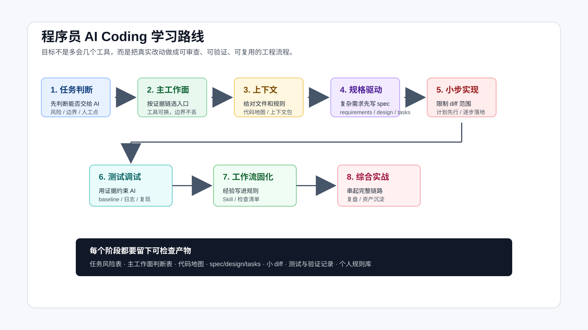

程序员如何系统学习 AI Coding
如果你已经会写代码，第一次认真把 AI 放进真实项目里，大概率会遇到一个反差。
它确实很快。
补一个函数、解释一段报错、生成一组测试、照着已有代码仿一个实现，很多时候几分钟就能看到结果。可一旦任务稍微真实一点，问题也会马上出现：它读了哪些文件？有没有漏掉关键入口？为什么改到不相关模块？测试失败到底是旧问题还是新回归？一段看起来能跑的代码，能不能进 review、进 CI、进生产？
这些问题不是多背几个 Prompt 就能解决的。
程序员学习 AI Coding，真正要学的不是“怎么把一句话说得更像魔法咒语”，而是怎么把 AI 放进自己的工程流程里。让它能帮你读代码、拆需求、写实现、跑验证、整理证据，同时又不能越过你设定的边界。
先从一个普通程序员每天都会遇到的问题开始：
我手上有一个真实代码库，有一个真实需求。
我想让 AI 帮忙，但不能让它乱改。
我该怎么开始？
先把目标说清楚
系统学习 AI Coding，不是把所有工具都学一遍。
Codex、Claude Code、Cursor、GitHub Copilot、OpenSpec、Spec Kit、Superpowers、MCP、Skill、Plugin，这些名字会不断变化。工具值得学，但不能按工具名组织自己的能力。否则每出一个新入口，你都要重新焦虑一次。
更稳定的学习目标应该是这几个：
- 能判断一个任务适不适合交给 AI。
- 能让 AI 读对上下文，而不是凭感觉猜。
- 能把复杂需求拆成可审查的小 diff。
- 能用测试、页面、接口、日志和 diff 证明结果是真的。
- 能把反复有效的流程沉淀成规则、脚本或 Skill。
AI Coding 的核心不是“AI 会不会写代码”，而是“你能不能控制一次 AI 参与的工程改动”。
这套能力一旦建立起来，工具可以换，流程不会塌。
为什么不能只靠 Prompt
很多失败看起来像 Prompt 写得不好，实际不是。
比如你让 AI 改一个“今日计划自动纳入逾期任务”的需求。它可能很快写出函数，也可能顺手加页面、接数据库、做提醒、改排序规则。代码都像那么回事，但需求边界已经被它扩大了。
再比如你让 AI 修一个 CLI 交互问题。它修了输出文案，却没有注意 stdout、stderr、exit code 和 README 示例命令也是用户可见合同。测试可能绿了，真实用户路径仍然坏着。
还有更常见的：你让 AI 接手一个陌生模块，它说“我理解了项目结构”，但没有列出自己实际读过哪些文件；它总结得很顺，可入口、测试、生成目录、历史兼容逻辑都没核对。这个时候继续让它实现，风险已经埋下了。
所以 Prompt 只是入口。
真实项目里更重要的是这些东西：
任务边界
上下文证据
实现计划
小步 diff
测试基线
验证结果
代码审查
规则沉淀
你可以把它们理解成程序员给 AI 装上的护栏。护栏越清楚，AI 越像一个可用的工程助手；护栏越模糊，AI 越容易变成一个很快的随机改代码机器。
这和工具教程有什么不同
很多 AI Coding 内容会从工具入口开始讲：
这个按钮怎么用。
这个命令怎么跑。
这个模型怎么选。
这个 Prompt 怎么写。
这些东西当然有用，但它们不是程序员最容易卡住的地方。
真正卡住你的，往往是工具已经会用了，代码也生成了，但你不知道该不该接受它。
比如 Agent 给你改了 6 个文件。它说“我已经完成并通过测试”。你打开 diff，发现里面有一段你没要求的重构。它解释说这是为了提高可读性。这个时候你要判断的不是 Prompt 够不够好，而是：
这段重构是否属于当前需求？
有没有改变外部行为？
测试能不能覆盖这个变化？
如果线上出问题，能不能单独回滚？
reviewer 能不能在一次审查里看懂？
这些判断靠工具教程解决不了。
再比如 AI 搜索项目后告诉你：“核心逻辑在 service 层，测试覆盖比较完整。”这句话听起来很专业，但如果它没有列出实际读取的路径，没有说明哪些测试覆盖哪些行为，没有说它排除了哪些 legacy、demo、generated 目录，你仍然只能相信它。
当工具已经能生成结果以后，真正要补的是判断结果是否可靠。很多关键动作看起来并不炫：
先看 git status。
先让 AI 列出读过的文件。
先跑改前基线。
先限制 diff 范围。
先写清不做什么。
完成前重新跑验证。
review 先看行为风险。
这些动作不新，但它们决定 AI Coding 能不能进入真实项目。
可靠改动要经过哪些控制点
先把一次可靠改动拆开看。

这几个控制点不要求一次学完，但每次真实改动都绕不开。
第一步是任务判断。
不是所有需求都应该直接交给 AI 写代码。改文案、补测试、生成脚本、解释报错，和跨模块业务需求、数据修复、线上故障，风险完全不同。任务类型不同，授权边界就不同。
第二步是选择工作面。
IDE 补全、CLI Agent、App、浏览器、终端、Git 都能参与 AI Coding，但它们不是按“哪个更高级”分工。能读仓库、改文件、跑命令、留下验证证据的工作面，更适合承接主流程；浏览器适合验页面，Git 适合审 diff，App 更适合预览、长任务管理、异步审查和材料整理。
第三步是上下文工程。
AI 会读文件，但你不能只听它说“我看过了”。你要让它列出实际读取过的路径、判断哪些入口相关、哪些目录不能碰、哪些测试要跑、哪些结论还没有证据。
第四步是规格和计划。
简单任务可以轻量计划，复杂需求要写清需求、设计、任务和验证方式。重点不是文件名，而是把“意图”从聊天窗口搬进仓库，让人和 AI 都能复查。
第五步是小步实现。
AI 很容易一次改太多。真实项目里，更好的做法是让它按小任务推进，每一步都能解释改了哪些文件、为什么改、怎么验证。
第六步是测试和调试。
不要接受“已经修复”这种口头结论。要看改前能不能复现，改后跑了什么命令，失败怎么分类，用户可见行为有没有验证。
第七步是工作流固化。
如果你反复提醒 AI 同一件事，就应该把它写进 AGENTS.md、CLAUDE.md、Skill、脚本或检查清单。规则不是为了显得专业，而是为了少犯重复错误。
最后是综合实战。
所有方法都要回到真实需求里。否则学完上下文、spec、TDD、review、Skill，还是不知道一个需求从进入仓库到交付复盘应该怎么串起来。
先从一个真实仓库开始
如果你想跟着学，不需要先准备一个大项目。
一个你熟悉的小仓库就够了。它最好满足几个条件：
能运行。
有基本测试或手动验证路径。
目录结构不是完全空白。
最近确实有一个小需求或小 bug。
你能判断 AI 的结果对不对。
不要一开始就拿线上高风险任务练。也不要只拿一次性 demo 练。demo 太顺，学不到边界；线上任务太重，容错空间太小。
比较合适的第一批任务是：
- 给 CLI 补一个用户可见错误提示。
- 给一个函数补边界测试。
- 让 AI 接手一个陌生模块但先不改代码。
- 修一个能稳定复现的小 bug。
- 给一个页面改轻量交互，然后用浏览器验证。
这些任务不大，但足够暴露真实问题：AI 是否读对文件，是否改到无关位置，是否知道怎么跑测试，是否会把完成说成一句空话。
第一次动手不要急着改代码
刚开始练 AI Coding，先做一个动作：让 AI 只读，不改。
给任务时直接这样写：
先不要改代码。
请围绕这个需求做一次仓库侦察：
1. 列出你实际读取过的文件路径。
2. 判断这个需求可能影响哪些模块。
3. 标出哪些目录或文件不应该修改。
4. 找到可以验证结果的测试、命令或手动路径。
5. 给出一个小步实现计划。
如果证据不足，先列出缺口，不要猜。
这个动作看起来慢，但它会立刻暴露一个 Agent 是否可靠。
可靠的输出会具体到文件、命令和风险。不可靠的输出通常很顺滑：项目结构总结得很好，结论也像那么回事，但没有路径、没有测试、没有排除项，也没有停止条件。
第一次练习时，你只需要检查四件事：
它读的文件是不是真相关？
它有没有漏掉明显入口？
它给的验证命令能不能跑？
它有没有把不该做的事列出来？
如果这四件事都说不清，先不要让它实现。
这一小步不会制造复杂 diff，却能训练一个关键习惯：AI 的结论必须能回到证据。
第一次练习的结果可以写得很短：
任务：修复 CLI 未知命令时的错误提示。
AI 读取过：src/cli.js、test/cli.test.js、README.md、package.json。
相关行为：stdout、stderr、exit code、README 示例命令。
不改范围：不改命令名称，不改配置格式，不引入依赖。
验证方式：npm test；手动运行 node src/cli.js unknown。
下一步：先补失败测试，再改 CLI 分支。
这类记录不需要漂亮。它的价值是让你在改代码前就知道：当前任务的边界在哪里，验证在哪里，AI 有没有漏掉关键文件。
等这个动作熟了，再进入复杂需求就顺了。上下文工程不是抽象概念，它就是让这份记录更完整；规格驱动不是写文档，它就是把边界和验证写得更硬；测试和调试不是流程表演，它就是在结果出来后确认它没有骗你。
起手任务要小，但要有真实合同
第一次练习，不要选“帮我重构这个系统”。
选一个边界清楚、能验证、出错成本低的小任务。比如一个 CLI 工具现在遇到未知命令时只输出 Unknown command，用户不知道有哪些可用命令。你想把它改成：
unknown command: publish
available commands:
- codemap
- context-pack
- verify-ledger
这个需求看起来很小，但它已经有真实工程合同：
stdout 还是 stderr？
exit code 应该是 0 还是 1？
README 里的示例命令要不要同步？
现有测试有没有覆盖未知命令？
命令列表从哪里来，是否会和真实实现漂移？
直接让 AI “优化 CLI 提示”很容易跑偏。它可能顺手改命令注册方式，可能把错误输出写到 stdout，可能只改代码不改 README，也可能新增一个项目里没有用过的依赖。
更好的起手是这样：
先不要改代码。
请先读取 CLI 入口、现有 CLI 测试、README 命令示例和 package.json。
列出当前 unknown command 的行为、已有测试覆盖、用户可见合同和最小修改范围。
如果需要修改，请先给出一个不超过两个文件的小步计划，并说明验证命令。
这段话没有复杂技巧，但顺序是对的：先找入口，再确认合同，再限制范围，最后才允许它计划修改。这样你拿到的不是一段“看起来更友好”的代码，而是一条可以审查的交付路径。
这种小任务练熟后，再去做更复杂的需求，心态会完全不同。你不会急着问“这个 Prompt 怎么写得更强”，而会先问：
AI 需要读哪些文件？
哪些行为不能变？
改完怎么证明？
如果它要扩大范围，应该在哪里停下来？
这才是程序员学习 AI Coding 的起点。
看过程证据，不只看最终代码
很多人看 AI Coding 结果，只看最后生成了哪些代码。这样很容易错过真正有价值的部分。
更应该看这些材料：
需求怎么被缩小。
哪些范围被拒绝。
AI 读了哪些上下文。
spec 或 plan 怎么写。
测试为什么这样设计。
最终跑了哪些验证。
review 看了哪些风险。
哪些经验写回了规则。
这些才是可迁移的部分。最终代码只是载体。
比如“今日计划”需求，表面上只是生成一个任务列表，真正要看的却是状态、日期、容量和排序怎么被限定住。
再比如 CLI 合同改造，表面上只是改错误提示，真正要看的却是 stdout、stderr、exit code 和 README 示例命令为什么都算用户可见行为。
只读项目工具也是一样。先证明权限边界，再考虑要不要包装成 MCP；先证明输出可复查，再考虑让 Agent 长期调用。
这些判断方式可以迁移到很多项目。
订单系统里，它可能变成“超时订单怎么关闭，但不能误关已支付订单”。工单系统里，它可能变成“SLA 快超时怎么升级，但不能把所有低优工单都推给同一个人”。内容系统里，它可能变成“审核任务怎么排优先级，但不能跳过人工复核”。
业务不同，控制点相似。
先改三个习惯
如果你已经在工作中用 AI 写代码，不需要先等工具体系全部学完。
第一，改起手式。
从现在开始，少用“帮我实现一下”。换成更可控的起手式：
先不要改代码。
请先读相关文件，列出证据、影响面、不可修改范围和验证方式。
这一句话会立刻改变 Agent 的工作顺序。
第二，给自己的项目补最小规则。
不用一开始写很完整。先写 5 件事：
项目怎么安装。
测试怎么跑。
哪些目录不能改。
什么算完成。
如果检查没跑，要怎么说明原因。
这些内容放进 AGENTS.md、CLAUDE.md 或项目已有的开发说明里。重点不是文件名，而是让 Agent 每次进项目时能读到稳定规则。
第三，选一个低风险需求练完整闭环。
完整闭环不是大项目。它只需要包含：
改前边界。
小步实现。
验证命令。
diff 审查。
剩余风险。
第一次跑通这个闭环，比追十个新工具更有价值。
每次学一个新工具或新流程，都先问一句：它能不能改进下一次真实任务？如果不能，就先放一放。AI Coding 的学习顺序不应该由工具热度决定，而应该由你手上的任务风险决定。
常见问题
已经会写代码，还需要系统学吗？
需要学的不是编程基础，而是协作方式。你已经知道什么是好代码、好测试、好设计，现在要把这些判断转成 AI 能执行、你能检查的上下文、规则和验证动作。
要不要一开始就学 OpenSpec、Superpowers、MCP？
不用。先把任务判断、上下文侦察、小步实现、测试验证跑通。等你遇到复杂需求、反复调试、流程复用或外部资源接入，再引入这些工具。工具应该解决痛点，不应该制造负担。
是不是每个任务都要走完整流程？
不是。改一个文案、补一个简单测试，不需要上完整规格流程。真正要学的是判断：什么时候直接做，什么时候先计划，什么时候必须写 spec，什么时候只能让 AI 辅助分析。
没有自动化测试，还能用 AI Coding 吗？
可以，但不能假装已经验证。没有自动化测试时，要写清手动验证路径、页面截图、接口返回、日志检查或数据检查。后面再逐步把高风险路径补成自动化测试。
只用一个工具能不能开始？
可以。真正要掌握的是控制点：读上下文、定边界、拆小步、跑验证、看 diff。工具换了，控制点仍然成立。
怎么判断 AI 的结果能不能接受？
先看证据，不看口头总结。最少看四件事：diff 是否在计划范围内，相关测试或手动验证是否跑过，用户可见行为是否确认，剩余风险是否说清楚。
先做一个只读任务
系统学习 AI Coding 的第一步，不是换工具，也不是背模板。
先拿一个真实小任务，要求 AI 只读仓库、列证据、给计划，不要改代码。你会马上看到自己的项目缺什么：规则文件、测试命令、上下文边界、验证路径，还是任务本身没有说清楚。
这些缺口，就是后面要逐个补上的能力。
当 AI 参与的每一次改动都能回到需求、上下文、diff 和验证证据上，它才真正进入了你的工程工作流。